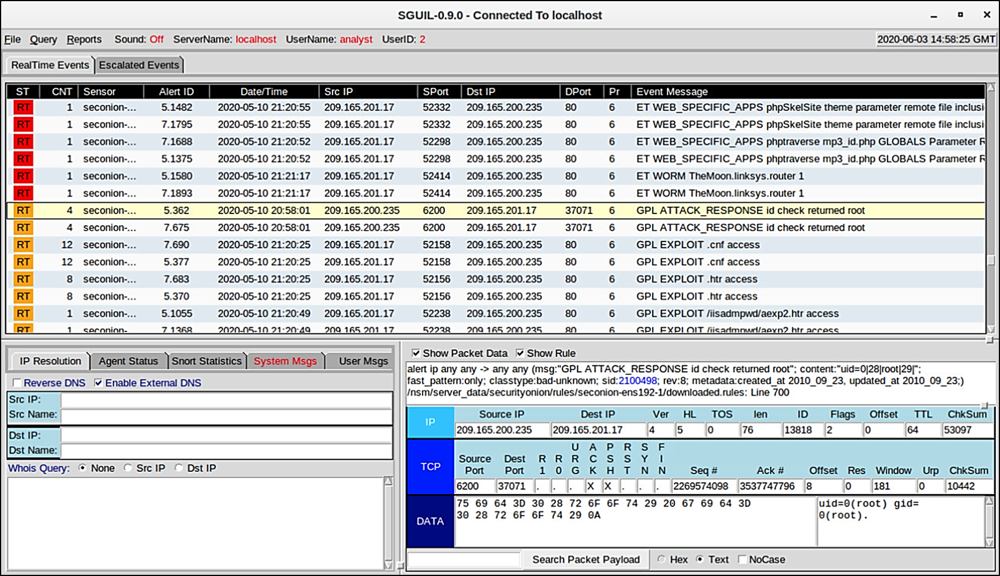
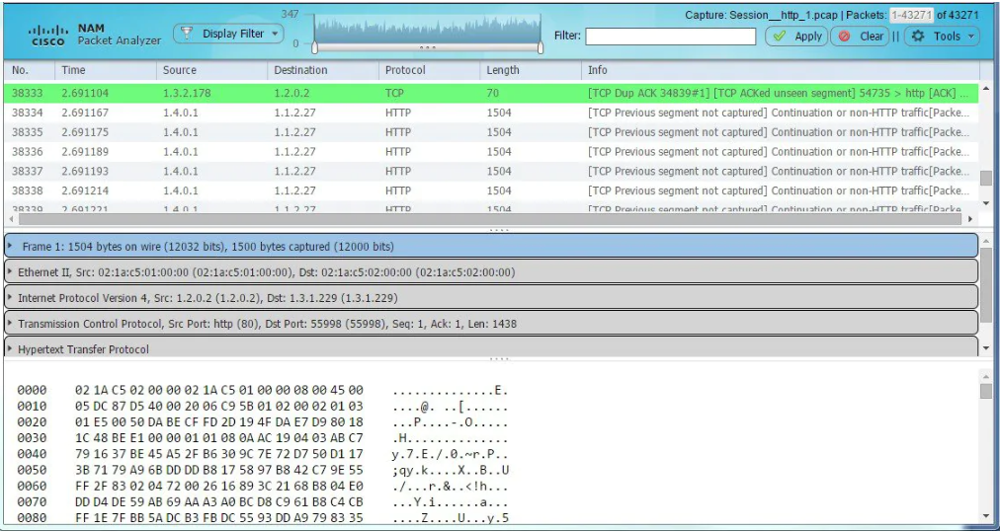

25.1.1 Datos de la alerta
Los datos de alertas son mensajes generados por sistemas de prevención de intrusiones (IPS) o sistemas de detección de intrusiones (IDS) para responder al tráfico que viola una regla o coincide con la firma de un ataque conocido. Un IDS de red (NIDS), como Snort, viene configurado con reglas para ataques conocidos. Las alertas son generadas por Snort y es posible leerlas y buscarlas por las aplicaciones de Sguil y Squert, las cuales son parte de la Security Onion suite de la herramienta NSM.
Un sitio de prueba que se utiliza para determinar si el Snort que está operando es del sitio tesmyids. Buscar información de él en Internet. Consiste en una sola página web que muestra sólo el siguiente texto uid=0(root) gid=0(root) groups=0(root). Si Snort funciona correctamente y un host visita este sitio, una firma coincidirá y se activará una alerta. Esta es una manera sencilla e inofensiva de verificar que el NIDS está funcionando.
La regla de Snort que se activa es la siguiente:
alert ip any any -> any any (msg:"GPL ATTACK_RESPONSE id check returned root"; content:"uid=0|28|root|29|"; fast_pattern:only;
classtype:bad-unknown; sid:2100498; rev:8;)
Esta regla genera una alerta si any IP address en la red se reciben datos de una fuente externa que contengan material con texto que coincida con el patrón de uid=0(root). La alerta contiene el mensaje GPL ATTACK_RESPONSE id check returned root. El identificador de la regla Snort que se activó es 2100498.
La línea resaltada en la figura muestra una alerta Sguil que se generó al visitar el sitio web testmyids. La regla Snort y los datos del paquete para el contenido recibido de la página web testmyvids se muestran en el área inferior derecha de la interfaz Sguil.
La consola Sguil muestra alerta de prueba de Snort IDS

25.1.2 Datos de sesiones y datos de transacciones
Los datos de sesión son un registro de una conversación entre dos terminales de red que suelen ser un cliente y un servidor. El servidor puede encontrarse dentro de la red empresarial o en un lugar al que se tiene acceso por Internet. Los datos de sesión son datos sobre la sesión, no los datos que recupera y utiliza el cliente. Los datos de la sesión incluyen información de identificación, como las cinco tuplas de direcciones IP de origen y destino, los números de puerto de origen y de destino, y el código IP del protocolo en uso. Los datos sobre la sesión suelen incluir un identificador de la sesión, la cantidad de datos transferidos por el origen y el destino, e información relativa a la duración de la sesión.
Zeek, antes Bro, es una herramienta de monitoreo de seguridad en la red que se utilizara más adelante en laboratorios de este curso. La figura muestra un resultado parcial para estas tres sesiones de HTTP desde un registro de conexión de Zeek. Las explicaciones de los campos se muestran debajo de la figura.
Datos de sesión Zeek - Contenido parcial

Los datos de transacciones son los mensajes que se intercambian durante sesiones de red. Es posible ver estas transacciones en las transcripciones de captura de paquetes. Los registros de dispositivos que conservan los servidores también contienen información sobre las transacciones que se producen entre clientes y servidores. Por ejemplo, una sesión podría incluir la descarga de contenido desde un servidor web, como se muestra en la figura. Las transacciones que representan las solicitudes y respuestas deberían de ser registradas en un acceso de registro en el servidor o mediante un NIDS como Zeek. La sesión se compone de todo el tráfico involucrado en la creación de la solicitud, y la transacción es la solicitud misma.
Datos de transacciones
25.1.3 Capturas de paquetes completos
La captura de paquetes completos es el tipo de captura que obtiene los datos más detallados de la red. Debido al nivel de detalle, estos tipos de datos tienen el uso más intensivo del almacenamiento y la recuperación en NSM. Las capturas de paquetes completos no solo contienen datos sobre conversaciones de red, como datos de la sesión. Las capturas de paquetes completos también contienen el material real de la conversación. Las capturas de paquetes completos contienen el texto de mensajes de correo electrónico, el código HTML de páginas web y los archivos que entran en la red o salen de ella. El contenido que se extrae de las capturas de paquetes completos puede recuperarse y analizarse en busca de malware o comportamiento del usuario que viole las políticas de la empresa y de seguridad. La conocida herramienta Wireshark es muy popular para ver capturas de paquetes completos y tener acceso a los datos relacionados con las conversaciones de red.
En la figura, se ejemplifica la interfaz de Network Monitor, un componente del sistema de la infraestructura Cisco Prime que, como Wireshark, puede mostrar capturas de paquetes completos.
Módulo de análisis de red de Cisco Prime: captura completa de paquete

25.1.4 Datos estadísticos
Al igual que los datos de sesiones, los datos estadísticos están relacionados con el tráfico de red. Los datos estadísticos se crean a través del análisis de otras formas de datos de red. A partir de estos análisis, es posible sacar conclusiones para describir o predecir el comportamiento de la red. Las características estadísticas del comportamiento normal de una red se pueden comparar con el tráfico de red actual en un esfuerzo por detectar anomalías. Las estadísticas pueden utilizarse para caracterizar volúmenes normales de variación en los patrones de tráfico de red con el fin de identificar las condiciones de red que están significativamente fuera de esos rangos. Las diferencias estadísticamente significativas deben desencadenar alarmas e impulsar la investigación.
El análisis de comportamiento de red (NBA, Network Behavior Analysis) y la detección de anomalías de comportamiento de red (NBAD, Network Behavior Anomaly Detection) son enfoques de monitoreo de la seguridad de la red que utilizan avanzadas técnicas analíticas para analizar los datos de telemetría de red de NetFlow o de Internet Protocol Flow Information Export (IPFIX). Técnicas como el análisis predictivo y la inteligencia artificial realizan análisis avanzados de datos de sesión detallados para detectar posibles incidencias de seguridad.
Nota: IPFIX es la versión estándar de IETF de Cisco NetFlow versión 9.
Un ejemplo de una herramienta de NSM que utiliza el análisis estadístico es Cisco Cognitive Threat Analytics. Es capaz de encontrar actividad maliciosa que ha evitado los controles de seguridad o que ingresó por canales no monitoreados (incluidos medios extraíbles) y está funcionando dentro del entorno de una organización. Cognitive Threat Analytics es un producto con base en la nube que utiliza el aprendizaje mecanizado y el modelado estadístico de las redes. Crea una línea de base del tráfico en una red e identifica las anomalías. Analiza el comportamiento del usuario y el dispositivo, además del tráfico web, para detectar comunicaciones de comando y control, exfiltración de datos y el funcionamiento de aplicaciones potencialmente no deseadas en la infraestructura. En la figura, se ve una arquitectura de Cisco Cognitive Threat Analytics.
Análisis de amenazas cognitivo de Cisco